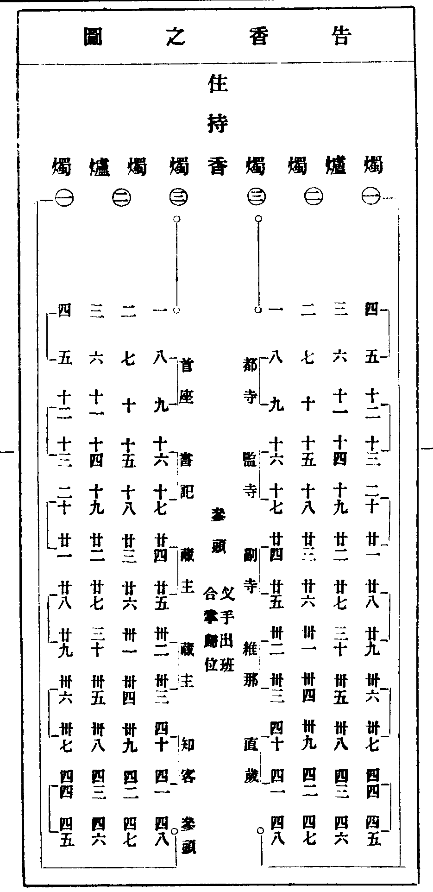
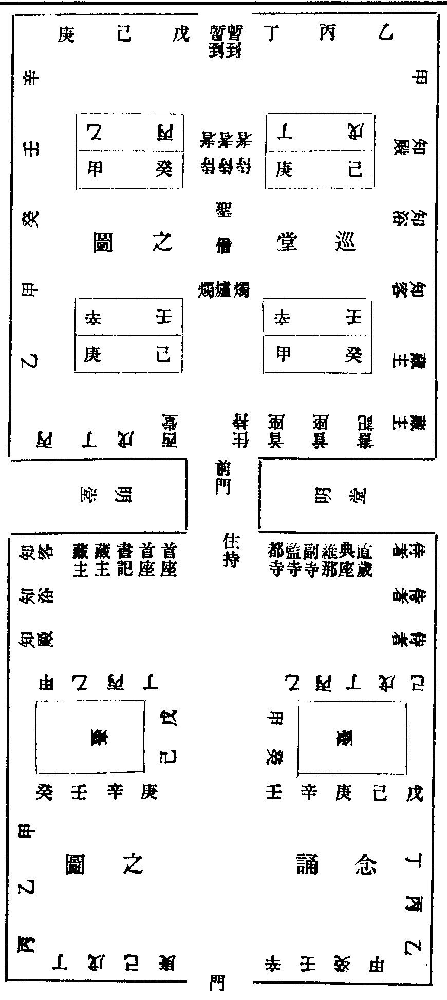

禪林備用卷之二
辰 坐禪
每日粥了。堂司行者。先覆首座。僧堂眾寮前。各挂坐禪牌。報眾。令供頭僧堂內裝香。點琉璃。堂司覆首座鳴眾寮前板一下。大眾即歸被位坐禪。堂司見被位有太半人。覆眾頭首鳴第二下板。少緩。鳴第三下板。寮元閉眾寮門。覆首座坐禪。鳴首座寮前板三下。初下首座出寮門。二下約半途。三下將入僧堂門。聖僧前。燒香一炷。自下間至上間。巡堂一帀。歸被位。謂首座曾出世。先上間同住持者。非法。次覆住持坐禪。鳴方丈前板三下。詳緩與首座同。住持入堂。燒香一炷。巡堂一帀。歸位。兄弟方許起身抽脫。又須看上下肩位。或先起者。待回方可起身。免見單位空踈。近日兄弟。置袈裟在被上。竟去閑處。打雜。相習成風。深為痛借。堂中單位空者。住持首座須當撿察。如眾頭首起位抽解。惟前堂首座。從住持面前出入。其餘皆從出入板出入。供頭候可開供時。堂司行者覆首座云。放禪。堂司行者從聖僧龕後。右出前門。撑起簾。下坐禪牌。撼聲覺眾。堂司右立俟問訊。住持。首座。眾頭首。出堂。
或遇迎送。或有普請。或送亡。或淨髮。則皆不坐禪。
宿 坐參
至午後。堂司行者覆首座坐參。僧堂眾寮前。各挂坐參牌。僧堂內裝香。點琉璃。打板。坐參。覆眾頭首覆住持。打首座寮方丈板。各三下。並與坐禪一同。但促鳴板耳。盖不起抽解故也。放參粥熟。堂司行者覆首座放參。行者轉龕後。右出前門。鳴僧堂前鍾三下。住持出堂。次首座眾頭首出堂。大眾和南問訊。下床。各出半單。歸眾寮喫粥。
前輩坐參。不待鳴板。先歸堂坐。集眾坐故。方丈不鳴板也。放參住持頭首同歸眾寮藥石。今也不然。甚失古意。
若晚參。
堂司行者不覆首座。不鳴僧堂前鍾。方丈客頭鳴法堂皷。住持出堂。首座頭首領眾。隨至法堂或寢堂。隨方毗尼。上座坐定。侍者出班。兩班東西堂。各出班問訊。晚參畢。眾散。各歸寮藥石。
若大放參。
堂司行者鳴首座寮前板三下。大眾轉身面外坐。首座離被位。下地。徑從住持面前。出後門。復轉從前門入堂。聖僧前。燒香一炷。從下堂至上堂。巡堂一帀。歸被位坐。堂司行者即進首座前問訊云。堂頭和尚今晚放參。堂司行者復從聖僧厨後。轉右。出僧堂前。令喝食行者。進前門限裏。中立問訊。長聲喝云。(放參)鳴堂前鐘三下。大眾和南。首座曾出世。先下地出門。次住持出堂。頭首出堂。眾僧各出全單。下地。歸寮藥石。
諸方謂放參不披袈裟。轉身方搭衣。非法也。唯徑山寺。古規不墜。披衣坐參。當力行之。
或不坐參。供頭出首座單。每日首座下地。後堂首座與次頭首伴。眾摺被。前堂被。係供頭摺蓋。參罷。眾寮前鳴板三下。出寮歸堂。昏鐘鳴。次頭首先入堂。首座待鐘轉二通入堂。燒香巡堂。歸位。次住持入堂。定鐘鳴。住持出堂。次頭首出堂。如坐再請禪。住持後門入。歸位。不巡堂。頭首隨眾。或抽解者。即歸被位。更深。住持從後門出。次第頭首下堂。開枕。睡重者。就睡。道念兄弟。不以此拘。三板鳴。眾起。聖僧侍者堂內牽手巾。驚酣眠者。洗面。眾歸堂已。先首座次住持。入堂。燒香。巡堂。歸位。四鼓。住持出堂。行香。鐘鳴首座下地。僧眾換衣。換頭袖。抽解。即歸守被位。鐘絕開小靜。方可摺被。為生死事大。禮拜燒香。亦雜用心也。
列 五日上堂
若尊宿相訪。不拘時。五參上堂。座不敷設。兩序徑歸班立。小參禮同。開發學者。致謝道舊。
古宿朝夕激揚此道。晚參曾不越宿。今時遇五上堂。單提正令。亦不易得也。
眾僧凡遇升堂。各賷坐具。禮不可廢。
早晨侍者。令客頭挂牌。報諸寮。尊宿。若致謝官員。當對座設位。住持趺坐了。令請客侍者揖引入位。官客受禮而已。坐則妨眾也。
張 小參
百丈謂之家訓。古法只就寢堂箴誨。垂示。委曲提撕。若其緘口亡言。倚目玄綱墜地。前輩時時激揚宗旨。開發後昆。楊岐逼慈明晚參。豈為他哉。汾陽以夜寒罷參。胡僧至而請之。頌云。(胡僧金錫光。為法到汾陽。六人成大器。勸請為敷揚)今之四節臘。敘謝兩班執事。非古法也。
午後。侍者令客頭報寮挂牌。
昏黃行者覆侍者。次覆住持鳴鼓。茶頭秉燭裝香。侍者離班。出法堂。候眾集。兩班徑歸位。立定。無對座問訊。侍者入請。住持出據位。小參皷鳴一通。皷鳴眾即集法堂。出班。並五日升堂禮同。結座。住持記請頭首秉拂。單寮四寮。并雜職。一一敘陳。委曲詳盡。失記處。侍者提起。庫司預備湯果。送上方丈。下座。客頭行者喝請云。(方丈請。兩班。西堂。單寮。大耆舊。蒙堂。侍者。禪客。即今就寢堂獻湯云)參前出免人事榜。客頭貼僧堂前上間。
榜式(來日結制解冬年。升堂罷普觸禮三拜。人事並免。到方丈。伏希 眾悉。 住山 某咨稟)。
寒 入室
開大爐鞴。煅煉方來。真正舉揚。克盡厥責。曉昏不拘時也。近代三八。聊應故事。漸寂無聞。可不痛心耶。
凡開室之時。粥前。侍者令客頭行者。眾寮僧堂前挂入室牌。寢堂設達磨像。前列香燭。拜蓆。客頭敷設室內。茶頭秉燭裝香。拜蓆設左側。喫粥。下堂。不諷經。客頭即緩擊皷三下。住持達磨前炷香三拜。侍者隨後拜。據室。侍者當面問訊。班左立。行者問訊。班右立。頭首領眾。達磨前。各炷香三拜。如班聯接首座後。後至者。須待次炷香展拜。接排而立。自右趲。至室前。不許攙先。亂眾倫序。侍者燒香一炷。問訊。出外揖。首座舉左足入。左手上香一炷。進步。當前問訊。至禪椅右側。立聽舉話。侍者再揖次人入。歸班立。首座下語。或不下語。過禪椅右。問訊退步。觸禮一拜。舉左足出。揖次人入。次第進退。如品字勢。若首座是大方西堂。或宿德。入燒香次。住持當引揖送出。升堂說過後次免之。後堂領眾。暫到皆當入室。若大方西堂。名德首座。同參。老成來預入室。當下座辭免。令侍者送出。侍者最後入室已。炷香列住持前。大展三拜。行者插香三拜。
按大慧竹庵雲門議集。入室罷。住持復出達磨前炷香。大展九拜。仰遵遺教。頫謝證明。令法久住。
來 告香
四月五日。告香。開示方來。眾推參頭一人。維那和會定。同眾詣侍司稟云。新挂搭兄弟。欲求和尚告香普說。敢煩侍者咨稟。者云。(容某候覆。却當相報)方丈允已。堂司預出告香圖。依戒排寫。式具後。預集眾習儀。堂司行者率大眾錢。買香大小三片。付參頭收。至日侍者令客頭。於寢堂或法堂。鋪設罣罳椅子。香几三隻。燭臺三對。當椅前。一字間列。外設小拜蓆。堂司預晚挂告香牌。牌左云。(告香罷普說)逐一報寮。至時諸寮鳴板三下。眾集。依圖位立。侍者白云。(奉堂頭和尚慈旨。出世西堂。名德首座。並免告香)各備小香合。坐具。參頭同維那侍者。入請住持出。參頭歸位。同眾問訊。進前云。(請和尚趺坐)參頭復位。同眾問訊。插大香一片。復同眾問訊。各大展三拜。收具。復問訊。參頭徑右入椅側。問訊。稟云。(某等。為生死事大。無常迅速。伏望。和尚慈悲。開示因緣)住持舉話三則。隨轉語了。歸位問訊。插香一片。復同眾問訊。就位。叉手而立。東西各三人出班。東第一第二。過東爐前。第三人中爐前立。西邊第一第二。過西爐前。第三人中爐前立。兩兩炷香。問訊。東邊三人。西邊三人。徐行各巡接班尾。三三出班。(叉手出班。合掌歸位)次第趲至元位。各大展三拜。不收具。參頭進前云。(某等伏蒙和尚慈悲開示。下情不勝感激之至)復位三拜。進前云。(即日孟夏。謹時。恭惟。堂頭和尚。尊候起居萬福)復位三拜。各收具。客頭鳴皷五下。兩班轉身立班。參頭立西班下手。東西轉身。隨班對立。聽普說竟。仍各面裏立。參頭插香。同眾大展三拜。免則觸禮三拜。進云。(某等夙生慶幸。獲蒙和尚慈悲開示。下情不勝感激之至)普同問訊而退。
參頭領眾。法堂下間。謝維那侍者。觸禮一拜。次眾人謝參頭。觸禮一拜。
請客侍者預日令客頭至。堂司。具新到戒次。寫茶狀。客頭俻卓袱。告香罷。列法堂下間。請茶。備筆硯。僉名。請首座光伴。齋退鳴鼓。住持接眾人歸位。立定。兩侍者行禮。與特為茶禮同。當晚方丈請參頭維那侍者藥石。首座光伴。次早請參頭茶。及請點心。維那侍者同。若大眾均預告香。首座為參頭。特為茶。止請參頭兩班光伴。住持入院後。人事定。庫司備香。首座領眾。詣方丈懇請。為眾告香。然後開室。古法未預告香。不許入室。
狀式 (某甲上座。 某甲上座。依戒書名訖。 方丈和尚。齋退。就法堂。特為點茶。伏希 雲集)(今 月 日。侍司 某甲。請客侍者名。拜請)。

暑 普說
凡普說時。侍者令方丈客頭。挂普說牌。於僧堂眾寮前。并諸寮鋪設。寢堂或法堂。粥罷。堂司行者覆侍者。次覆方丈。鳴皷五下。緩擊。侍者出寢堂候眾集。入請住持。出據坐。普說與小參禮同。
洞下尊宿。每遇朔望。眾寮設位。為眾普說。惟大慧和尚。宗通說通。不拘時節。不擇方所也。
往 念誦(三八)
結夏依戒次寫圖。至日僧堂前掃洒。午後。堂司行者覆方丈諸寮。挂念誦牌。分付鐘頭。至參前撿點聖僧前。及諸殿堂。香燭完備。先覆維那侍者方丈庫司首座頭首單寮。鳴照堂板三下。次巡廊鳴板。再上覆方丈打板。眾集。依圖立定。暫到侍者下肩立。住持到大殿燒香。鳴大板三下。次鳴大鐘。兩班預集僧堂外。大板鳴。方歸圖位。次住持入堂。供頭鳴堂前鐘七下。住持聖僧前燒香。侍者捧合。請客侍者即往西班人前。巡問訊。請云。(方丈和尚請。念誦罷。寢堂。献湯)請東班。同就歸圖位立。住持出堂前。面外立。燒香侍者隨出歸位。維那先離位。至門首。面住持立。合掌念誦畢。歸班位。住持入堂。次首座入。西堂隨首座後入。在聖僧板頭立。次頭首接後。次第三三。聖僧前。問訊。轉身。問訊住持。面北巡堂問訊。依圖位。合掌立。暫到眾人。末侍者。隨後入。至聖僧龕後。面門立。暫到面龕立。次知事入堂。巡問訊出堂。暫到侍者隨出。堂司行者。往首座前。覆放參。從龕後轉。出前門。供頭鳴鐘三下。住持出。兩班隨出。堂前謝湯。
下八赴湯。寢堂鳴板。侍者燒香行禮如常式。湯罷。藥石。古法。三八皆有湯。上八中八則免藥石(不坐參。至晚坐堂則如常)。
念誦式。(上八中八)皇風永扇。帝道遐昌。佛日增輝。法輪常轉。伽藍土地。護法護人。十方檀那。增福增慧。為如上緣念。清淨法身毗盧遮那佛(十聲。聖號了。回向)。
(下八)白大眾。如來大師。入般涅槃。至今至治元年。已得二千二百七十載。是日已過。命亦隨減。如少水魚。斯有何樂。眾等當懃精進。如救頭然。但念無常。慎勿放逸。伽藍土地護法護人。十方檀那。增福增慧。為如上緣念。清淨十號。

秋 四節念誦
結制。解制。冬節。歲除。土地堂嚴設供養。庫司客頭覆維那。堂司行者覆方丈。兩班諸寮。挂念誦牌。報眾。禮與三八同。眾集。相對鴈立。住持大殿炷香三拜。鳴大板三下。鳴大鐘。住持至。大眾合掌。俛首迎之。侍者當叉手。隨行。入土地堂燒香。出外立。維那爐前面外揖。住持上香。侍者捧合。次兩班對出。有借香問訊。出班畢維那面裏念誦。回向了。鳴齋皷一通。眾歸堂赴湯。與結夏茶禮同。
念誦式。(結夏)切以。薰風扇野。炎帝司方。當法王禁足之辰。是釋子護生之日。恭裒大眾。肅詣靈祠。誦持萬德洪名。回向合堂真宰。所祈。加護得遂安居。仰憑大眾念。清淨法身毗盧遮那佛(十聖號了)。
回向云。上來念誦功德。回向當山土地(列位)。合堂真宰。所冀。神光叶贊。發輝有利之勛。梵苑超隆。永錫無私之慶。再勞大眾念。十方三世一切諸佛(云云)。
(解夏)切以。金風扇野。白帝司方。當覺皇解制之辰。是法歲周圓之日。九旬無難。一眾咸安。誦持萬德洪名。仰畣合堂真宰。仰憑大眾念。清淨法身(云云)。
(至節)切以。時臨亞歲。節屆書雲。當一陽來復之辰。乃萬彚發生之始。恭裒大眾。肅詣靈祠。誦持萬德洪名。回向合堂真宰。仰憑大眾念(云云)。
(除夕)切以。化工密運。歲曆云周。咸忻四序之安。將啟三陽之慶。恭裒大眾。肅詣靈祠。誦持萬德洪名。回向合堂真宰。仰憑大眾念。清淨法身(云云)。
收 請益
投情請益。先詣侍司詳稟。侍者咨覆住持。厶甲上座。今晚欲詣方丈請益。如允所請。定鐘後。詣侍司伺候。侍者隨住持坐處。令秉燭裝香。引入問訊。插香一片。大展九拜。收具進前。問訊云。(某為生死事大。無常迅速。伏望。和尚慈悲。方便開示)肅躬側立。下手。諦聽法誨。垂問來歷。從實稟畣了。進前問訊。出爐則。插香一片。大展三拜。謂之謝因緣。免則觸禮。次詣侍司致謝。
冬 秉拂
至日午後。侍者令客頭携主杖牌拂。僕隸托柈袱。爐燭。報上首知事。維那同詣頭首寮。炷香觸禮一拜。申請云。(方丈和尚。令某等。詣寮拜請。今晚為眾秉拂)一一請已。首座同受請。次頭首令行者將牌拂主杖。即詣方丈稟辭。住持勸請了。送出。首座轉身。借法座法鼓。
秉拂人。即令茶頭行者。請聖僧侍者禪客茶。復燒香一炷云。今晚秉拂。煩侍者燒香。禪客(問話)。方丈分付客頭。請頭首藥石。參前齋赴。堂司行者排辦法座前。敷罣罳椅子。設住持位。昏黃時。行者覆秉拂人。次覆方丈。鳴皷一通。眾集。小參禮同。住持歸位前立定。都寺維那侍者。同至秉拂人前。問訊。歸位。秉拂人。往住持人前問訊。次從知事班上首。問訊。巡至班末。轉同班上首問訊。巡揖至班末。舉手與大眾。普同問訊。即登(座。坐定。秉拂侍者。出班。次兩班出班。東堂西堂出班。住持出班。當起身受禮。秉拂人云。侍者請堂頭和尚)趺坐。侍者往住持前。問訊。登座。燒香一炷。提坐具問訊。側立。秉拂人。索話。問畣了。提綱。敘謝方丈合山(眾已)。舉方丈小參公桉。拈頌畢。下座。住持前問訊。復元位。次人如前行禮。登座。秉拂竟。客頭喝請湯果。下座。即懷香同詣方丈。拜謝。就座湯果。次日方丈請茶。都寺辦齋。併請茶。半齋點心。別日置管待。上堂敘謝。
今諸方若解夏之熱。除夕之寒。免之。廢禮。後學無所觀望。或請立班大方西堂。在第三夜。住持小參時。委曲勸請。舉揚隨息。拈頌公桉。遞相激揚此道。豈細事哉。
禪林備用卷之二